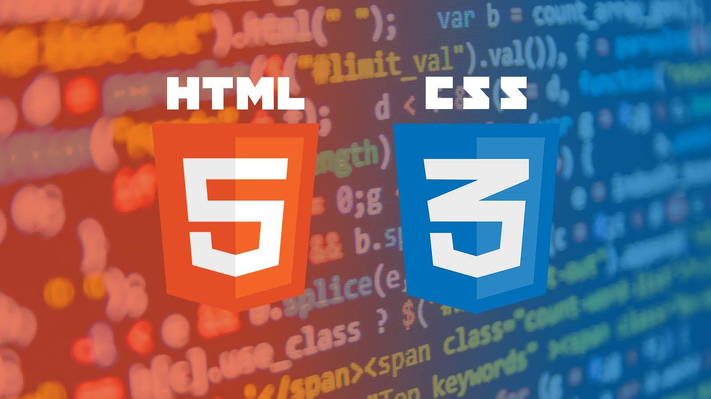

Név:
WEB technológiák
Tárgykód:
GEIAL331B

Tematika:
1. HTML, JavaScript, Java servlet fejlesztése. HTML nyelv kialakulásának története. HTML alapelemek,
Űrlapok, DHTML. Stíluslapok használata, JavaScript. Események kezelése, DOM és SAX alapjai. Az XML
struktúra. DTD és XMLSchema: XSL.
2. Web szolgáltatások tervezése, megvalósítása. Web szolgáltatások fogalma, működési mechanizmusa. A Web
szolgáltatások 3 de facto szabvány XML alapú technológiája: a Web szolgáltatások szabványos
kommunikációs protokollja: SOAP, a Web szolgáltatások szabványos leírási mechanizmusa: WSDL, a Web
szolgáltatások szabványos regisztrálási és felderítési mechanizmusa: UDDI. Web szolgáltatások
megvalósítása